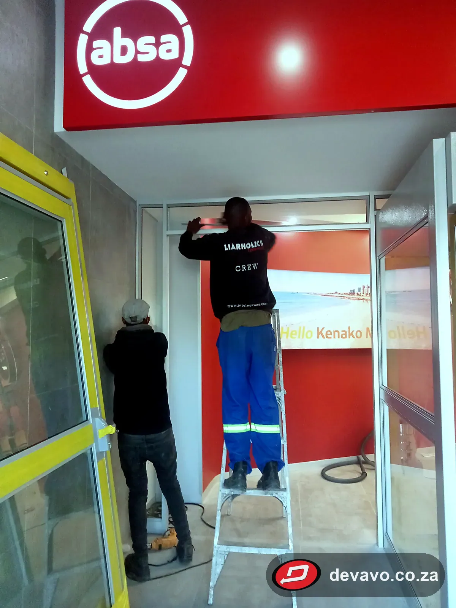

Home / Projects
ProjectsOur work across all four divisions
Photos from homes, shops, campuses and public buildings across the Eastern Cape, and a record of recent contracts.
Browse by division


Recent contracts
Selected work for main contractors, government and institutions. References are available on request.
Nelson Mandela Bay Municipality
Building works at Daleview Community Hall and KwaMagxaki Hall (Ward 30)
Nelson Mandela Bay Municipality
Building works, Jeff Masemola, KwaNobuhle
NHFC
Remedial works to a fire-damaged house, Jeffreys Bay
Nelson Mandela University
Aluminium windows, Solomon Mahlangu building
EC Social Development
Gate motors and nylon gear rack, Ernest Malgas Treatment Centre
EC Public Works & Infrastructure
Minor building repairs to houses, Makhanda
Sundays River Valley Municipality
Entry doors for community halls
EC Public Works & Infrastructure
Heavy-duty gate motor installation, Graaff-Reinet
South Point, Gqeberha
Shopfront installations
WBHO
Brickwork for the APLI cold storage facility, Coega IDZ
SANParks, Tsitsikamma
Glass supply and installation for the restaurant
South Point, Gqeberha
Suspended ceilings
South Point, Gqeberha
Annual building painting maintenance
FM Solutions (EC Health maintenance)
Replacement sliding aluminium sashes, Dora Nginza Hospital
“They have performed well and would recommend them for contracts of similar value.”
Zusakhe Mahonono, SMME Manager, WBHO (completion letter, APLI cold storage facility, Coega)
Tell us what you need built
Send a few details and photos of the job on WhatsApp, or fill in the form, and we will come back to you with a quote. Site visits are arranged by appointment.
- Call or WhatsApp079 034 0115
- CatalogueBrowse our products on WhatsApp
- Workshop5 Diesael Street, North End, Gqeberha, 6001
- HoursMon – Fri: 08:00 – 17:00
Saturday: 08:00 – 13:00